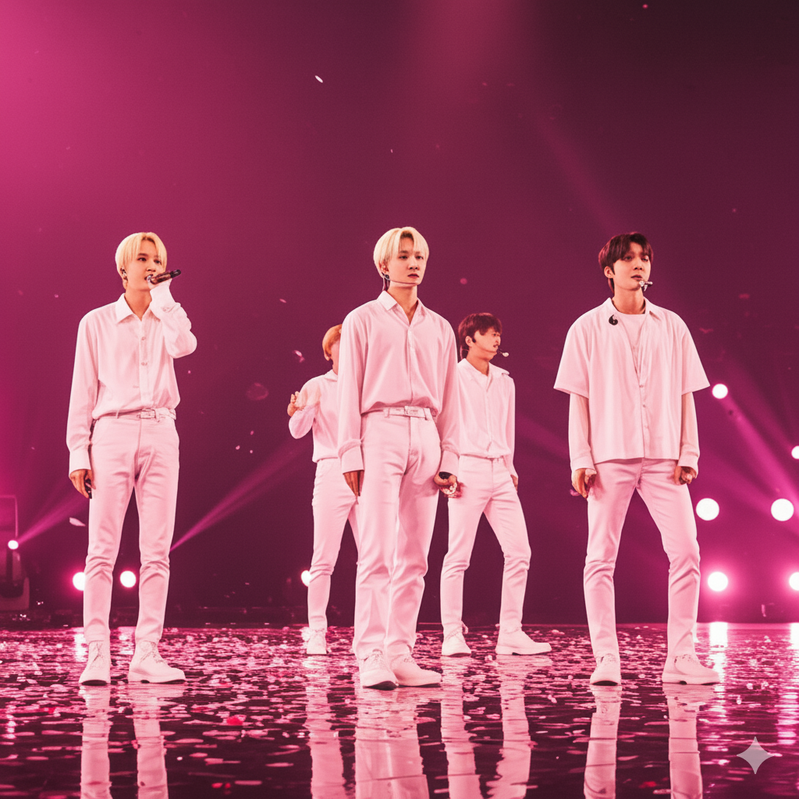

①
나만을 위한 K-NFT 피드
최근 시청한 쇼츠, 좋아요, 보유한 NFT를 기반으로 개인화된 K-POP NFT 피드를 보여줍니다. 홈 화면부터 바로 팬 맞춤 콘텐츠에 도달할 수 있습니다.
- · 공식 컨텐츠 & 팬메이드 쇼츠 동시 지원
- · 뮤직비디오, 팬캠, 비하인드 컷까지 한 번에
- · 언어/지역에 맞는 스토리형 큐레이션
K-POP FANDOM · WEB3 NATIVE
K-Sync는 K-POP 팬을 위한 쇼츠 NFT 피드, 오디션 & 챌린지, 정산 내역까지 한 번에 제공하는 모바일 앱입니다. 한국어 · 영어 · 일본어 인터페이스로 글로벌 팬덤을 연결합니다.

홈 피드 · 오디션 · 지갑 정산까지, 팬 경험을 기준으로 설계했습니다.
최근 시청한 쇼츠, 좋아요, 보유한 NFT를 기반으로 개인화된 K-POP NFT 피드를 보여줍니다. 홈 화면부터 바로 팬 맞춤 콘텐츠에 도달할 수 있습니다.
정식 데뷔 기회와 연결되는 오디션/챌린지를 쇼츠 형태로 제출할 수 있습니다. 라운드별 진행 현황과 심사 결과를 앱에서 실시간으로 확인하세요.
한 화면에서 NFT 생성 · 로열티 설정 · 정산 내역을 관리합니다. Web3 지갑 연결 경험이 없는 팬들도 쉽게 사용할 수 있도록 UX를 다듬었습니다.
한 앱 안에서 한국어 · 영어 · 일본어 인터페이스를 제공합니다. 모든 텍스트는 Flutter 공식 gen-l10n 기반으로 관리되어, 언어 추가/수정 시에도 개발 부담을 최소화했습니다.
지갑 · 정산 · 오디션 등 복잡한 플로우를 한국어 UX에 맞춰 표현했습니다.
Global fans can browse, collect and submit auditions in a familiar interface.
日本のファン/クリエイター向けに、自然なコピーとUI用語を調整中です。
지금은 내부 베타 단계로, 제한된 팬덤 커뮤니티와 함께 UX를 다듬고 있습니다. 아티스트/레이블/에이전시 협업 문의는 별도 채널을 통해 받고 있습니다.
지금 단계에서 자주 나오는 질문들을 빠르게 정리했습니다.
초기 버전에서는 대표 썸네일(이미지)을 중심으로 하되, 앱 안에서는 실제 쇼츠 영상을 재생하는 하이브리드 방식을 준비하고 있습니다. 장기적으로는 온체인/오프체인 저장 전략을 고려해 확장할 예정입니다.
네, 일반 로그인으로 피드를 둘러보고, 이후 단계에서 지갑을 연결할 수 있도록 설계되어 있습니다. 지갑 용어/플로우는 한국어 UI에 맞게 최대한 단순하게 정리했습니다.
현재는 Android 우선으로 개발 중이며, iOS는 오디션/정산 플로우가 안정화된 이후 순차적으로 대응할 예정입니다.